Российский университет дружбы народов им. П. Лумумбы
Цель работы
Ознакомление с файловой системой Linux, её структурой, именами и
содержанием каталогов. Приобретение практических навыков по применению
команд для работы с файлами и каталогами, по управлению процессами (и
работами), по проверке использования диска и обслуживанию файловой
системы.
Задание
Выполните все примеры из лабораторной работы.
Выполнить команды по копированию, созданию и перемещению файлов и
каталогов.
Определить опции chmod
Изменить права доступа к файлам
Прочитать документацию о командах mount, fsck, mkfs, kill
Выполнение лабораторной
работы
Создаю файл, дважды копирую его с новыми именами и проверяю, что все
команды были выполнены верно.
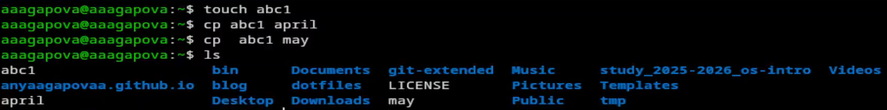
Создание файла
Создаю директорию, копирую в нее два созданные файла, проверяю.
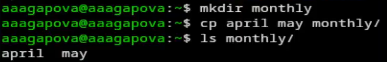
Создание директории
Копирую файл, находящийся не в текущей директории.
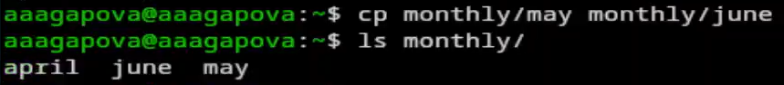
Копирование файла
Создаю новую директорию. Копирую созданную директорию вместе с
содержимым.
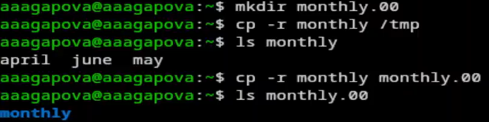
Создание директории
Переименовываю файл, перемещаю в каталог.
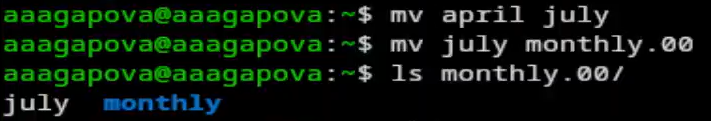
Переименовывание файла
Создаю новую директорию, переименовываю , перемещаю директорию и
переименовываю эту директорию.
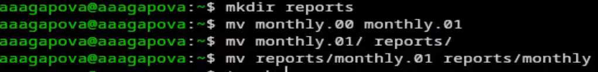
Создание директории
Создаю пустой файл, проверяю права доступа, меняю их.
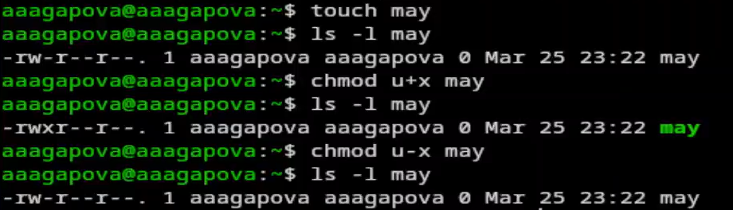
Работа с правами доступа
Меняю правадоступа у директории.
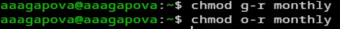
Изменение прав доступа
Меняю права доступа у директории. Создаю новый пустой файл, даю
права доступа.
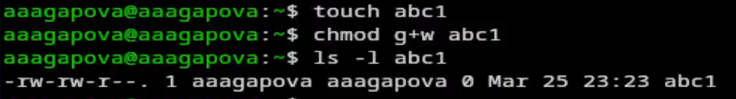
Изменение прав доступа
Проверяю файловую систему.
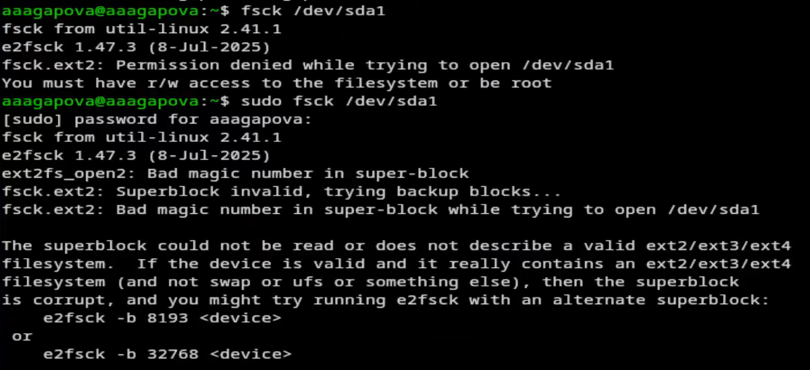
Проверка файловой системы
Копирую файл в домашний каталог с новым именем, создаю новую пустую
директорию, перемещаю файл, переименовываю файл.
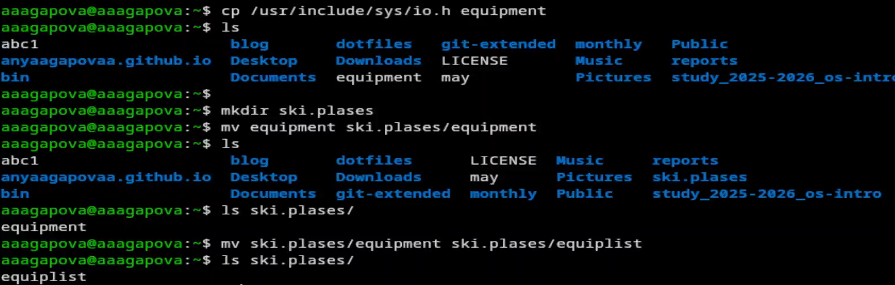
Копирование файла
Создаю новый файл, копирую его в новую директорию с новым именем.
Создаю внутри этого каталога подкаталог, перемещаю файлы.
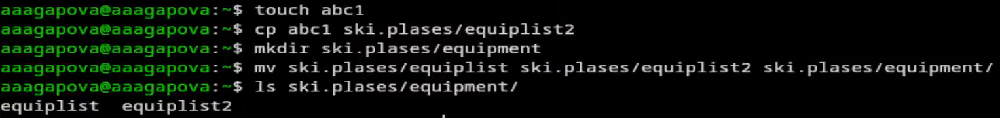
Создание файла
Создаю новую директорию, перемещаю с новым именем в директорию,
созданную в прошлый раз.
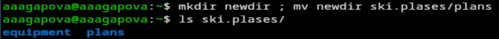
Создание директории
Проверяю, какие права нужно поменять, чтобы у новой директории были
нужные по заданию права.
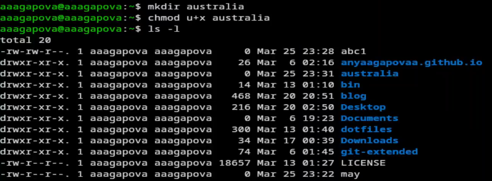
Работа с правами доступа
Проверяю, какие права нужно поменять, чтобы у новых файлов были
нужные по заданию права.
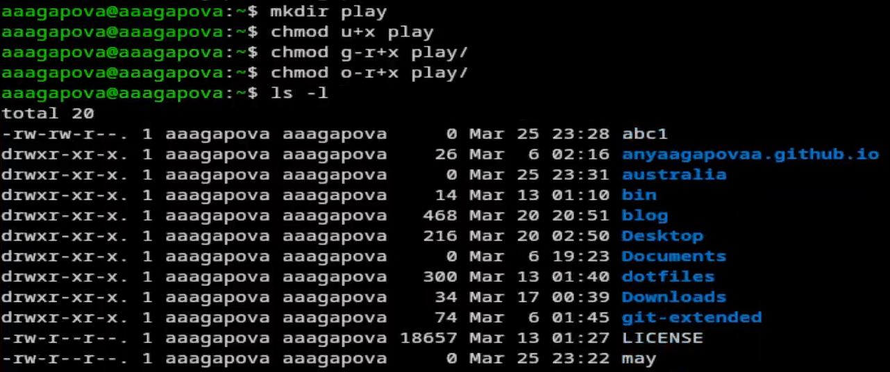
Работа с правами доступа
Создаю файл, добавляю в правах доступа право на исполнение и убираю
право на запись владельца, создаю другой файл.
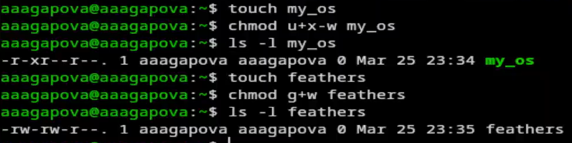
Работа с правами доступа
Читаю содержимое файла.
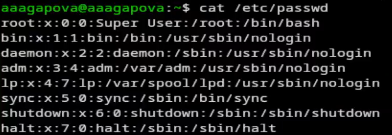
Чтение файла
Копирую файл с новым именем, перемещаю в директорию, рекурсивно
копирую ее с новым именем, рекурсивно копирую папку.
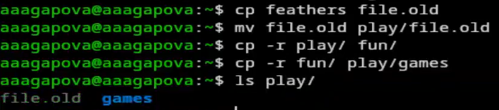
Копирование файла
Убираю право на чтение файла для создателя.
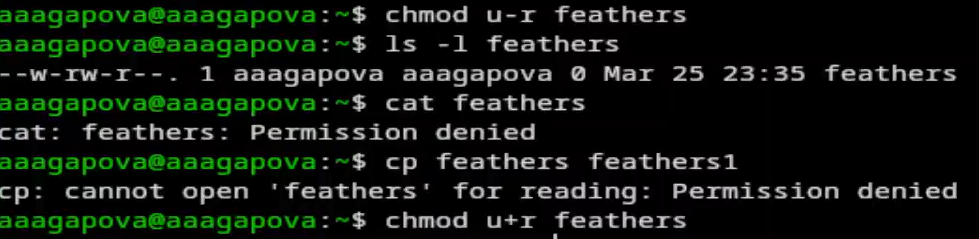
Работа с правами доступа
Убираю у директории право на исполнение для пользователя. Возвращаю
все права.
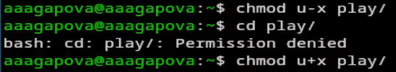
Работа с правами доступа
Читаю документацию. Команда mount используется для подключения
файловых систем к дереву каталогов операционной системы.
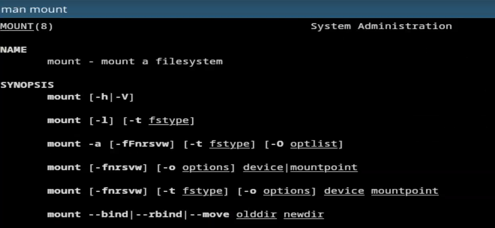
Чтение документации
Читаю документацию. Команда fsck (File System Consistency Check)
используется для проверки и восстановления целостности файловых систем.
Она анализирует структуру файловой системы на наличие ошибок и при
возможности исправляет их.
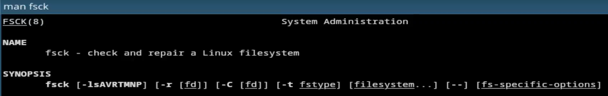
Чтение документации
Читаю документацию. Команда mkfs (Make File System) используется для
создания файловой системы на разделе диска или другом блочном
устройстве.
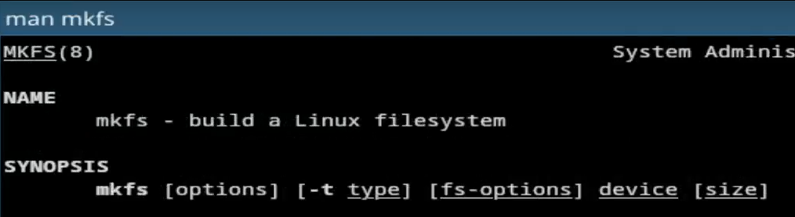
Чтение документацию
Читаю документацию. Команда kill используется для отправки сигналов
процессам в Linux/Unix. Чаще всего применяется для завершения
(остановки) процессов, но может использоваться и для других целей —
приостановки, продолжения работы, перечитывания конфигурации и т.д.
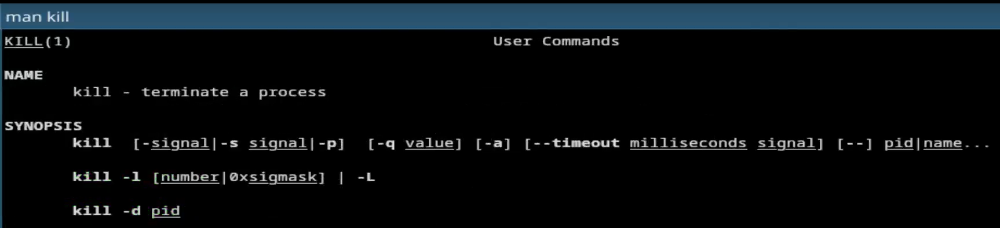
Чтение документации
Выводы
При выполнении данной лабораторной работы я ознакомилась с файловой
системой Linux, её структурой, именами и содержанием каталогов.
Приобрела практические навыки по применению команд для работы с файлами
и каталогами, по управлению процессами (и работами), по проверке
использования диска и обслуживанию файловой системы.